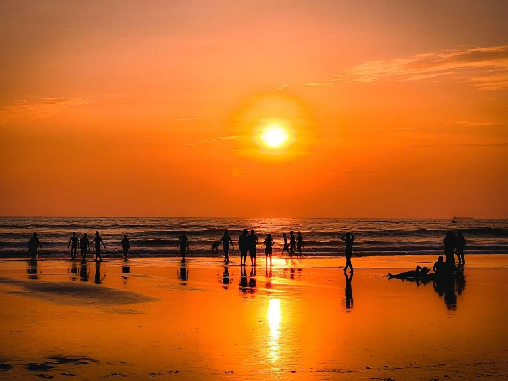
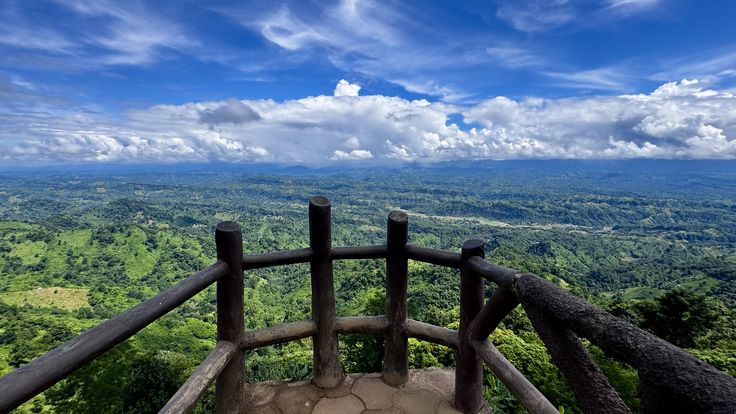
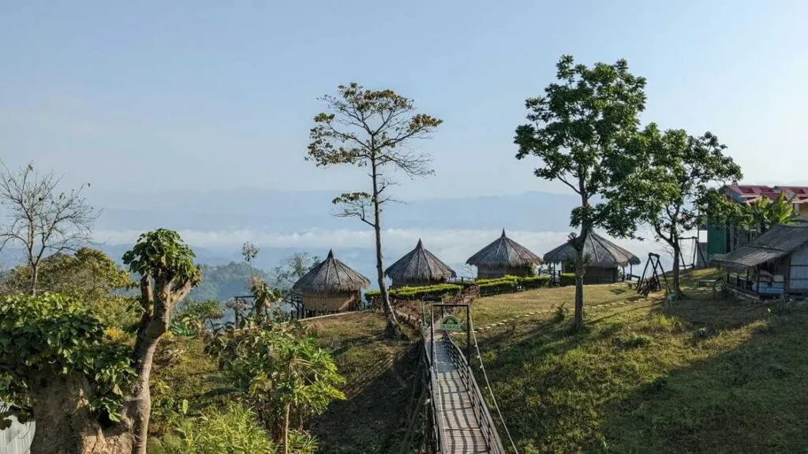
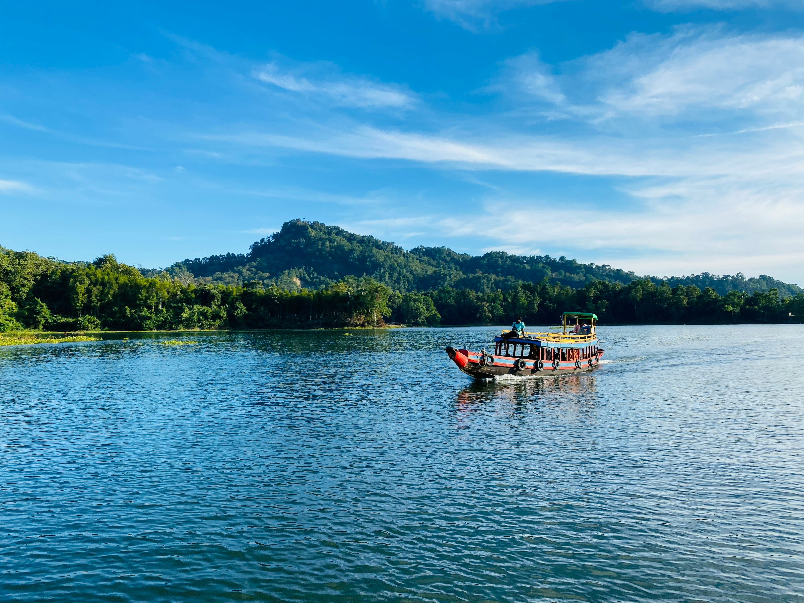
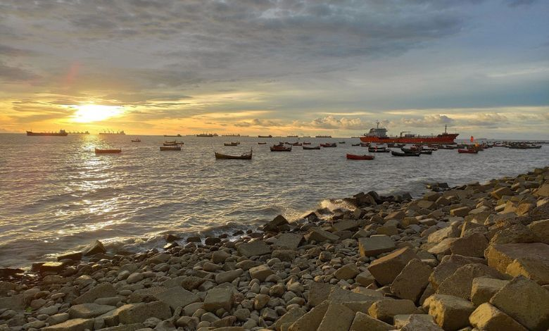
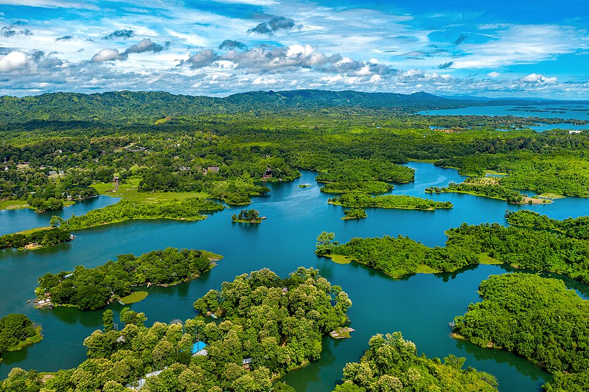

Beautiful Places of Chattogram Division

Cox's Bazar
World's longest natural sea beach with golden sand and breathtaking sunset views.

Bandarban
The Queen of Hills, famous for misty mountains, waterfalls and tribal culture.

Khagrachari
Green hills, lakes and rich indigenous culture make it a hidden paradise.

Rangamati
Known as the Lake District of Bangladesh, famous for Kaptai Lake and scenic beauty.

Potenga Beach
Popular beach near Chattogram port, perfect for enjoying sea breeze and watching ships.

Kaptai Lake
Largest man-made lake in Bangladesh. Famous for boating and stunning natural views.